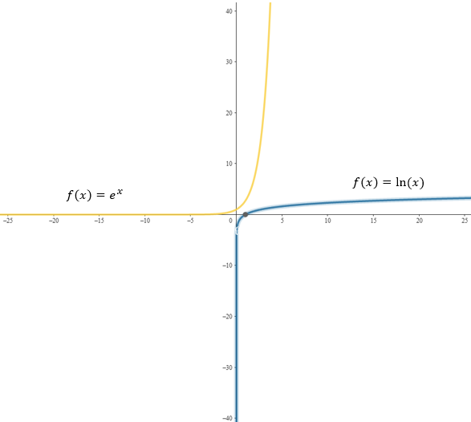
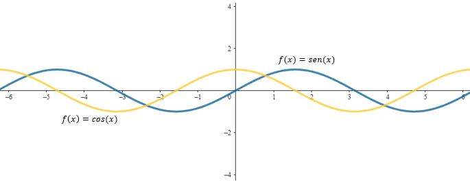
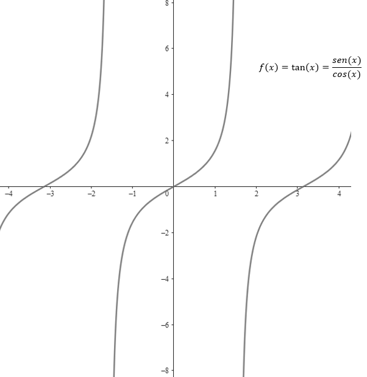

9 Funciones especiales
Las funciones especiales son herramientas matemáticas fundamentales que permiten describir fenómenos naturales y procesos complejos en diversas áreas. Entre estas funciones se encuentran las exponenciales y las trigonométricas, que son ampliamente utilizadas en ciencias aplicadas.
Funciones exponenciales
Las funciones exponenciales tienen la forma general \(f(x) = a^x\), donde \(a\) es una constante positiva distinta de 1. Estas funciones crecen o decrecen rápidamente dependiendo de si la base \(a\) es mayor o menor que 1. Un ejemplo clásico es la función \(f(x) = e^x\), donde \(e\) es el número de Euler.
En la práctica, las funciones exponenciales se emplean para modelar procesos como el crecimiento poblacional, el interés compuesto, la desintegración radiactiva o la propagación de enfermedades. Por ejemplo, en el caso del crecimiento poblacional, si una población inicial se duplica cada cierto tiempo, su comportamiento puede describirse con una función exponencial. Este tipo de función permite prever tendencias futuras y evaluar posibles escenarios en diversas disciplinas.
Funciones logaritmicas
Las funciones logarítmicas son el inverso de las funciones exponenciales y tienen la forma general \(f(x) = \log_a(x)\), donde \(a\) es la base del logaritmo, una constante positiva distinta de 1. Estas funciones crecen de manera más lenta en comparación con las exponenciales y están definidas únicamente para valores positivos de \(x\). Un ejemplo común es la función \(f(x) = \ln(x)\), donde \(\ln(x)\) es el logaritmo natural, con base \(e\).
En la práctica, las funciones logarítmicas son útiles para modelar fenómenos donde el crecimiento se desacelera con el tiempo, como en la escala de Richter para medir la magnitud de los terremotos, la escala de pH en química o el análisis del aprendizaje humano. Por ejemplo, en la escala de Richter, un aumento de una unidad en el logaritmo representa un aumento exponencial en la energía liberada por un terremoto. Estas funciones permiten interpretar relaciones no lineales y son fundamentales en ciencias, ingeniería y economía.

9.1 Funciones trigonométricas
Las funciones trigonométricas, como el seno, el coseno y la tangente, están definidas en el contexto de triángulos rectángulos y el círculo unitario. Estas funciones son esenciales para describir relaciones entre los ángulos y los lados de un triángulo, así como para analizar fenómenos periódicos. El seno (\(\sin\)) y el coseno (\(\cos\)) se utilizan para calcular proyecciones en los ejes vertical y horizontal, respectivamente.

Mientras que la tangente (\(\tan\)) relaciona el seno y el coseno mediante la fórmula \(\tan(x) = \frac{\sin(x)}{\cos(x)}\). En aplicaciones prácticas, estas funciones se emplean en áreas como la acústica, la ingeniería y la navegación, donde es necesario analizar movimientos ondulatorios, vibraciones y trayectorias. Además, son clave en la representación de señales periódicas, como las ondas de sonido o de luz.
